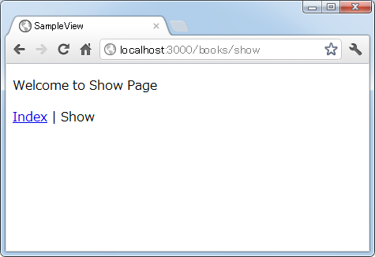
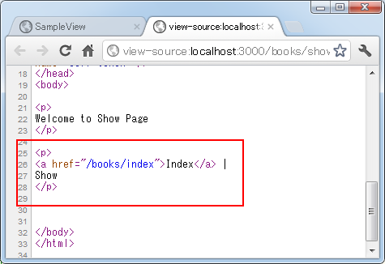
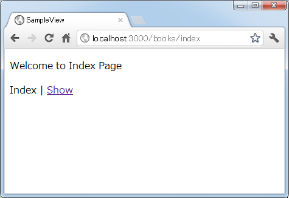
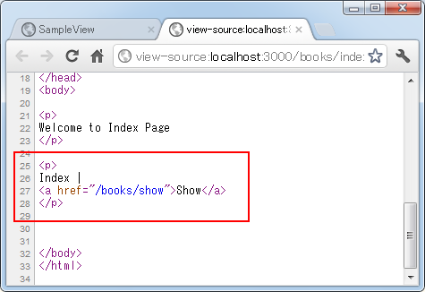

現在のページと同じページの場合はリンクを貼らない(link_to_unless_currentメソッド)
link_to_unless_currentメソッドを使ってリンク先が現在のページと同じページの場合はリンクを貼らない方法について解説します。複数のページで同じ複数のリンクを表示する場合で、同じページに対するリンクだけは自動的にリンクにしたくない場合に便利です。
※ 通常のリンクを作成する方法については「link_toメソッドを使ったリンクの作成」をご参照下さい。
link_to_unless_currentメソッドはActionView::Helpers::UrlHelperクラスで次のように定義されています。
link_to_unless_current(name, options = {}, html_options = {}, &block)
基本的な使い方はlink_toメソッドの場合と同じです。ただ表示しているページと同じページへのリンクだった場合は、リンクではなく単なるテキストとして表示されます。
次の例を見てください。
Indexページ以外で表示した場合： <%= link_to_unless_current 'Index Page', '/books/index' %> --> <a href="/books/index">Index Page</a> Indexページで表示した場合： <%= link_to_unless_current 'Index Page', '/books/index' %> --> Index Page
このように同じ記述をしても、表示されるページによってどのように出力されるのかが変わります。
では実際に簡単な例で確認してみます。「books」コントローラに次のように「show」アクションと「index」アクションを作成します。
class BooksController < ApplicationController def show end def index end end
今回は部分テンプレートを作成し、その中に2つのページで共通して使用するメニューを記述します。メニューのリンクはlink_to_unless_currentメソッドを使いますので、部分テンプレートを読み込んだページによってリンクになったりテキストになったりします。(部分テンプレートについては「部分テンプレート」をご参照下さい)。
では部分テンプレートとして「app/views/books/_menu.html.erb」ファイルを作成し、次のように記述しました。
<p> <%= link_to_unless_current 'Index', '/books/index' %> | <%= link_to_unless_current 'Show', '/books/show' %> </p>
次に「books」コントロールの「show」アクションから呼び出されるテンプレートとして「app/views/books/show.html.erb」ファイルを作成し、次のように記述しました。
<p> Welcome to Show Page </p> <%= render 'menu' %>
同じく「books」コントロールの「index」アクションから呼び出されるテンプレートとして「app/views/books/index.html.erb」ファイルを作成し、次のように記述しました。
<p> Welcome to Index Page </p> <%= render 'menu' %>
ルーティングの設定として「config/routes.rb」ファイルを次のように記述しました。
SampleView::Application.routes.draw do get "books/show" get "books/index" end
ではアプリケーションを起動し「books」コントロールの「show」アクションを呼び出してみます。すると次のように結果がブラウザに表示されました。

部分テンプレートで読み込んだ部分の中で、2番目のリンクについては表示しているページと同じページへリンクのため、リンクではなく単なるテキストとして出力されています。ソースで確認してみると1つはリンクで1つはテキストとして出力されていることが分かります。

では画面に表示されている「Index」と書かれたリンクをクリックして下さい。「index」アクションが呼び出され次のようにブラウザに表示されます。

先程は「Index」の方にリンクが設定されていましたが、今度は「Show」の方にリンクが設定され「Index」の方は単なるテキストとして表示されています。ソースで確認してみると1つはテキストで1つはリンクとして出力されていることが分かります。

このように共通したリンクを複数のページで表示したいけれど、自分自身へのリンクだった場合はリンクの変わりに単なるテキストを表示したい場合にlink_to_unless_currentメソッドは便利です。
( Written by Tatsuo Ikura )

著者 / TATSUO IKURA
初心者～中級者の方を対象としたプログラミング方法や開発環境の構築の解説を行うサイトの運営を行っています。